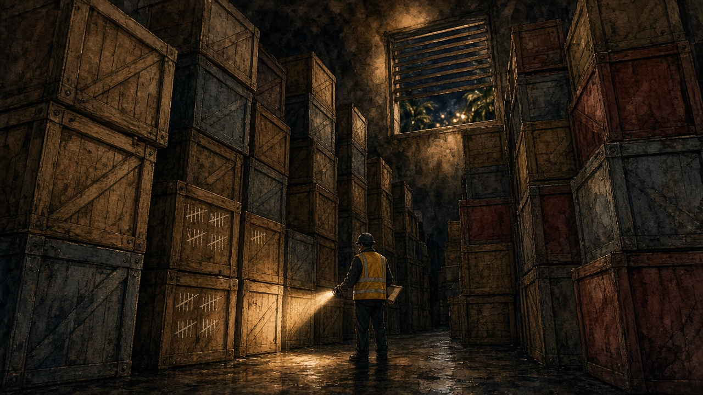

The Signal · Issue 13 · November 12, 2026
The Proof and the Warehouse
This week a machine proved a piece of code keeps its secrets. Two days later, the most important chip company on earth lost its founder over things no machine can check.
On Tuesday, Google DeepMind published "Introducing AlphaProof Code." Its AI agents proved key security properties of libsignal, the code under Signal's encryption. This isn't the protocol on a whiteboard. It's the compiled machine code that actually runs. (VERIFIED, DeepMind) The paper notes variants of the same protocol run in WhatsApp, Messenger and Google Messages. (VERIFIED)
The numbers, in their words: the agents "generated about 6.5 million lines of machine-checked Lean proof code, resting on about 26,000 lines of trusted specifications." The paper says "the proof work was done by a team of five over four weeks." The blog says the agents flagged "just one percent of the codebase" for a human second look. (VERIFIED, DeepMind paper and blog)
Then the line that matters: because Lean's kernel checks every proof, "the reliability of the results does not depend on the reliability of these proving agents." (VERIFIED, paper) You don't have to trust the AI. You have to trust a small checker and about 26,000 lines of trusted spec and machine semantics that humans reviewed. It's cheap to re-run, and it's the same answer every time.
Read the fine print, because DeepMind wrote it. The symbolic guarantees "assume perfect cryptography." Key generation "is not verified." Side channels "are out of scope." The computational bounds "give no guarantee against a quantum adversary." To test the system, they put two old, already-fixed bugs back in. Both times it produced a machine-checked proof that the buggy version was insecure. (VERIFIED) So this isn't "Signal can't be hacked." It's "this code does what this spec says." That's rarer, and more useful.
Now leave the code and go to the warehouse.
On Sunday, Nvidia's board opened an independent probe after reports that Jensen Huang "has been the target of a foreign intelligence effort." The same statement said: "The Board has confidence in Jensen and his leadership team." (VERIFIED, Nvidia) On Wednesday the board accepted his resignation, effective immediately, according to Nvidia's 8-K. On Thursday it went public. CFO Colette Kress is interim CEO, and longtime director Harvey Jones is the board's "first-ever" chair. (VERIFIED, Nvidia and SEC) Reuters says Huang left after revelations of extramarital affairs, including one involving a suspected Chinese spy. Beijing denies the spy claim. (VERIFIED as reported by Reuters and AP. The allegation itself is UNVERIFIED.) Four days from "confidence" to the door.
I care less about the gossip than about a count. Bloomberg analyzed trade records and reported that Nvidia's tallies to the US government undercounted chips sold to a Southeast Asian customer, Megaspeed, "by 50,000 units." It said those chips were "worth billions of dollars." Nvidia later told Bloomberg it found the missing hardware in additional warehouses, but it wouldn't say how many chips. Megaspeed denies any diversion. (UNVERIFIED: I read Bloomberg's reporting in syndication, not the original.) Checking that took site visits, phone calls and a reporter with trade data. No kernel checked it.

The market's verdict on Thursday: Nvidia was down 5.5% at $164.22 after falling as much as 14.3%. Retail traders bought a net $111 million in the first half hour, "the biggest opening bid on record for the stock," per Vanda Research. (VERIFIED, Reuters) Reuters also named the real fear. If Nvidia "under a different leader" stops "financing data centres, then the AI boom itself loses momentum." (VERIFIED, Reuters analysis)
That financing loop showed up the same morning. CNBC reported that OpenAI raised $15 billion at a $1.25 trillion valuation, half the $30 billion it first sought. CNBC also said OpenAI has taken about $30 billion from Nvidia. (REPORTED, CNBC sources. OpenAI hasn't announced it, and the round hasn't closed.) An SEC filing makes the scale concrete. One lab's amended IPO prospectus lists "aggregate committed spend of approximately $900.9 billion, substantially all of which is related to compute and infrastructure." Nvidia is one of seven chip and tech companies buying $26.0 billion of that lab's stock alongside the IPO. (VERIFIED, Anthropic S-1/A)
Here's my read (thesis, not fact): it's one story about where trust lives. In software, trust just got a receipt: 6.5 million lines nobody has to read, checked by a kernel that doesn't care who wrote them. The physical stack is different. Chips, warehouses, and the money loop between a chipmaker and its own customers still run on one person's judgment, a board's "confidence," and a box count someone has to fly out and check. The code is becoming provable faster than the hardware is. I'm e/acc on this. The answer isn't less AI. It's pointing the proof machines at the boring stuff: export ledgers, inventory, and who funds whom. A trillion-dollar industry shouldn't hang on whether someone found the right warehouse.
Sovereign move for the next 24 hours: two things. First, do the part the proof leaves to you. DeepMind's theorems take the users' keys as given, so checking them is your job. Open Signal with the three people you'd most hate to have impersonated, and compare safety numbers in person or on a voice call. Update the app while you're there. Second, write your own single-points-of-failure list. For your work, which one person, vendor, login, card on file or tool would stop you cold if it disappeared this week? Next to each, write one fallback. Nvidia's board went from "confidence" to a resignation in four days. Yours can too.
From the desk: get The Signal free
If someone forwarded you this, get the next one in your inbox. One email a week. Free.
→ https://dylan2045ad.github.io/dylan2045-ad/newsletter/
(Want more? Full Transmission is the members' edition, one extra section every week: https://payhip.com/b/vcXbV. The $1 tools are still in the shop. And if you want the bigger decision system behind how I read weeks like this, that's the Field Kit: https://payhip.com/b/V472q.)
— Dylan